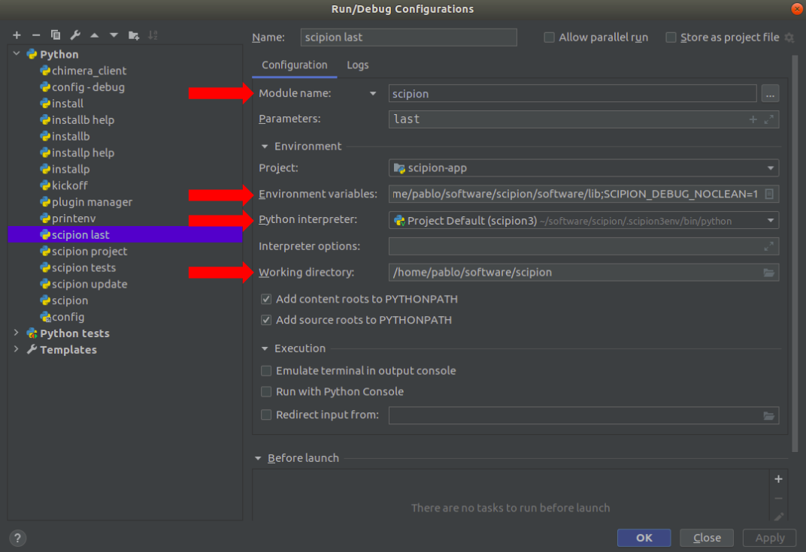

Debugging Scipion with PyCharm¶
Associated resources¶
Here you can find resources associated with this content, like videos or presentations used in courses:
Practice¶
We assume you have Scipion3 installed and PyCharm configured
We will learn how to add run configurations to skip scipion3 launcher and directly been able to use PyCharm “debug” button straight away with many of the scipion modes (tests, project, config, …)
We will also learn how to attach to a “protocol process” to debug its steps.
Skipping the scipion3 launcher in PyCharm configurations¶
Add a new PyCharm configuration: they can be used to easily executed commands in one click. To create a new configuration, click on Add Configuration > ‘+’ icon > python:

Set the values according to the image below

- Name: scipion3 last.
- Module name: Choose module mane in the dropdown instead of script and then choose “scipion”
- Parameters: enter “last”. This will open directly the last modified project.
- Environment variables: You need to set 2 of them
- SCIPION_HOME=/path/where/scipion/is/installed
- LD_LIBRARY_PATH=/path/where/scipion/is/installed/software/lib
- Working directory: same as SCIPION_HOME
“Apply” and you’ll have now a “direct” run/debug PyCharm configuration.
NOTE: Duplicating this configuration and changing the “Parameters” field and “Name” will provide you more direct run configurations for other scipion modes like “tests”, “config”, … Type scipion3 help to discover them.
Testing the direct configuration¶
Set a breakpoint at scipion-app/scipion/__main__.py in the first import line by clicking in the empty space between the line number and the import line. A dot should appear
Click on the “Green bug” icon, or Run>>Debug or it’s shortcut
PyCharm should stop execution in that breakpoint line.
Checkout this page to learn more about debugging in PyCharm.
Debugging the clicking on “Execute” button¶
Let’s debug what happens when you click on the “execute” button in the protocol form. Set a breakpoint at scipion-pyworkflow/pyworkflow/gui/form.py/FormWindow.execute Don’t worry if you don’t understand all the code there. Click on the debug icon. Try to understand:
- How the protocol validation happens
- Try to reach the point where the new process for the protocol is created